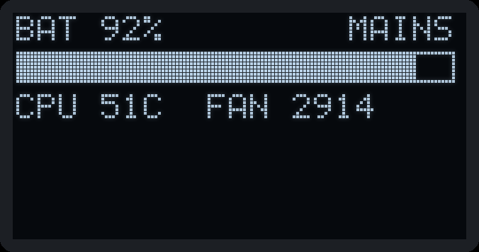
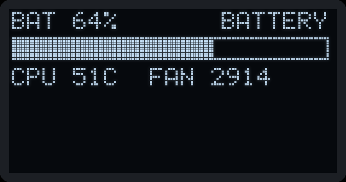
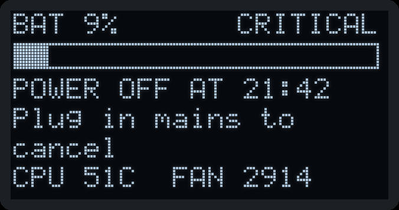
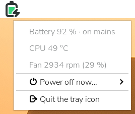
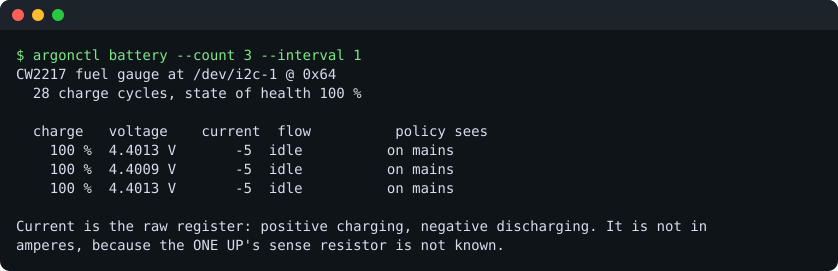
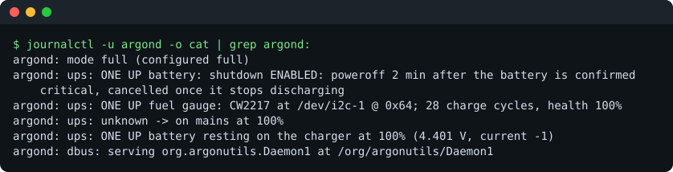
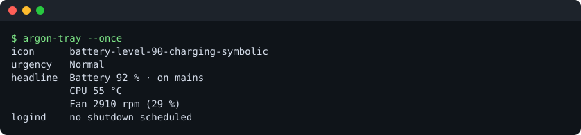

Open, safe control software for Argon40's Raspberry Pi cases, the Argon PWR UPS and the Argon ONE UP laptop — written in Rust, GPL-licensed, and built clean-room from published documentation and measurements of real hardware.
Status: in daily use on a Raspberry Pi 5 in an Argon ONE V5 with the PWR UPS, and on an Argon ONE UP laptop that it has taken over from the vendor's software. Every claim here says how it was verified.



Rendered by the same drawing code argond runs on the ONE V5's OLED, from example readings.


argonctl battery on an Argon ONE UP: its fuel gauge, read-only.

argonctl with manual pagesmode = "full"ifs| Product | What argon-utils does | Status |
|---|---|---|
| Argon PWR UPS (27 W, 5000 / 10000 mAh) | Battery and mains monitoring, low-battery shutdown, UPS clock | tested |
| Power off and wake at a set time | partlywake set and read back; the wake itself not yet seen | |
| Argon ONE V5 with Raspberry Pi 5 | OLED status page; fan reported (the kernel drives it) | tested |
| Argon Industria Zigbee module | Detection and a non-disruptive firmware probe | tested |
| Argon ONE UP (CM5 laptop) | Battery, lid switch, lid actions, hand-over from the vendor daemon | tested |
| Keyboard illumination | nono host control found | |
| Argon ONE V2 / V3 with Raspberry Pi 4 | Fan control and power button through the case's microcontroller | planned |
| Argon EON, Fan HAT | Fan, clock, OLED | plannedonly with hardware to test |
| NEO 5, NVMe boards, POLY+, THRML, Mini Fan, HMI displays, BLSTR DAC | Passive, or handled by standard Linux drivers | n/anothing to control |
The project supports hardware it can test, and says so; nothing ships as blind support.
Build the Debian package on the Pi, then install it. It starts read-only; nothing is switched on until you choose.
dpkg-buildpackage -b -us -uc
sudo apt install ../argon-utils_*_arm64.deb
sudoedit /etc/argon-utils/config.toml # mode, [ups] source, [oled], [lid]
sudo systemctl restart argondOn an Argon ONE UP, /usr/libexec/argon-utils/oneup-takeover --full hands the battery
and lid over from the vendor's daemon; oneup-restore gives them back. Details in the
packaging README.
Argon40's own software carries no licence, so this project does not copy or translate it. Everything is written against specifications from published documentation, component datasheets and our own captures — each fact with its provenance — and nothing unverified may drive a write to hardware. See CLEANROOM.md and the protocol facts.